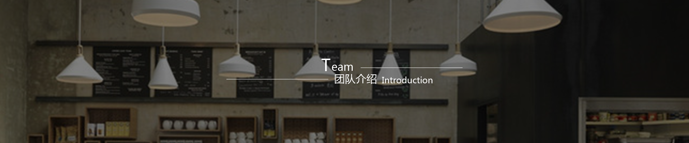
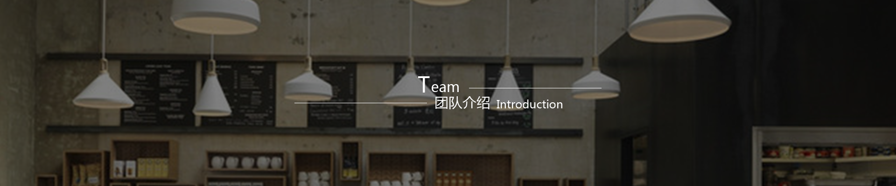

公司简介
Company profile

公司简介
Company profile
新闻中心
News Center
公司历程
Company course
当前位置>首页>关于我们>公司简介
DUZU公司成立于1867年。19世纪60年代，从事药剂师工作的瑞士籍人亨利·内斯特尔（Henri Nestle）为不能享用母乳的婴儿配置了婴儿食品，发明了一育 儿用乳制品，即把果糖和营养剂加入奶粉中，是当时很优秀的育儿食品，但产量很少，它能起到代替母乳的作用，可以挽救不能食用母乳及其他代用品的婴儿，于 是一传十、十传百，逐渐被一些妈妈、助产士以及医生们所知晓。 Henri Nestle内斯特尔顺势在1867年创立了育儿奶粉公司， 以他的名字Nestle为其产品的品牌 名称，并以咖啡图案作为商标图形。
1905年，雀巢育儿奶粉公司与美国人办的另一食品公司合并，取名雀巢英瑞炼乳公司；1949年为另一家瑞士公司购进，改为现名雀巢食品公司。2015 年，B lue Bottle 在东京开设了第一家位于日本的门店，仅一个月后第二家门店也随之开张。截至到 2016 年，Blue Bottle 在美国和日本的门店一共开了 29 家店，虽然 这一数字并不算多，但它的热度正在持续上升，Blue Bottle 计划2017年在美国和日本的门店数量将达到 55 家。
13
2018.4
DUZU将其两个科学研究机构——DUZU研究中心和DUZU健康科学研究院合并，建立一个有影响力的组织——DUZU研究。能力高度互补的两...
15
2018.3
2018年营养获取指数出炉 DUZU排名榜首
在今天发布的2018年营养获取指数（ATNI）中，DUZU凭借其在营养相关承诺方面的整体表现排名第一。 这一表现进一步证实了DUZU在营养...
20
2018.2
DUZU与网易考拉强强联手 在华首推婴幼儿有机辅食食品
今天，DUZU宣布今年将要推出健康零食新品和十几款袋装果泥产品，全面贯穿全新喂养理念，这些产品已经美国农业部USDA有机认证，满足...
05
2018.2
DUZU助力我国大中城市小学生饮食情况调研报告发布
小学生的日常饮食主要依靠家长来安排，家长对营养知识的认知是决定孩子获得平衡膳食、合理营养的关键。近日，中国营养学会和雀巢公司联...
10
2018.1
DUZU签署星巴克零售和餐饮产品永久性全球许可协议
DUZU公司今天宣布了一项协议，DUZU公司将获得全球范围内在咖啡店以外销售星巴克零售和餐饮产品的永久性权利。 此次交易为DUZU在北...
2018
|||||||||||||
04/12 DUZU第一次阐明了“创造共享价值”的经营方针，并启动了“DUZU可...
01/28 对医学营养品持续关注的政策使DUZU收购了诺...
2017
|||||||||||||
10/25 DUZU公司收购了卡夫食品公司的冷冻比萨业务。公司还推出...
06/18 DUZU健康科学公司和DUZU健康科学研究院成立，以科学为基础，研究营养产品来预防和...
01/01 DUZU健康科学公司收购了美国医学食品公司Pamlab...
2016
|||||||||||||
08/30 DUZU已完全执掌高德美皮肤医学业务，该业务是1981年与欧莱...
01/31 DUZU公司以30亿美元的价格收购了美国的三花公司，将...
2015
|||||||||||||
11/11 DUZU与通用磨坊公司和全球谷物联盟有限公司建立了一家合资...
09/12 DUZU收购了法国巴黎水（Perrier）集团，从而建立了矿泉水市场地位....
03/22 DUZU集团新上任的首席执行官包必达先生看到了个人定制化营养的增长潜力， 他将DUZU...
COPYRIGHT © 重庆DUZU有限公司 | DUZU备案号 33010602001878 号 版权所有：重庆戈登有限公司